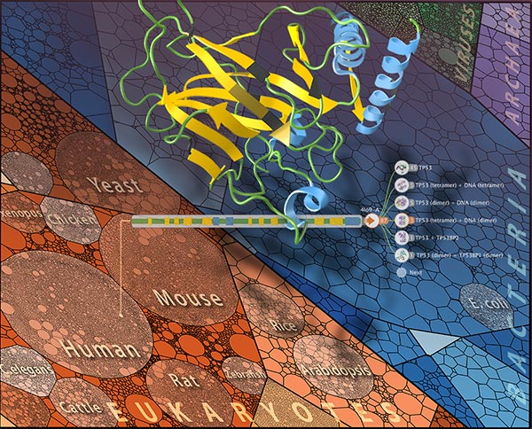

Aquaria launch event



Tuesday, 3rd February 2015, 9:00 - 10:00 am, John Shine room, Garvan Institute
Watch this event via webcast live from this page!
Sydney: 9am Tuesday, February 3, 2015
Lisbon: 10pm Monday, February 2, 2015
Munich: 11pm Monday, February 2, 2015
New York: 5pm Monday, February 2, 2015
San Francisco: 2pm Monday, February 2, 2015
Aquaria is a new web resource for biologists that simplifies the process of gaining insight from protein structures. This event coincides with the publication of an announcement about Aquaria in Nature Methods.
A range of speakers will introduce Aquaria, describe how it works, and highlight how it can be used by biologists to gain insight into protein function.
Speakers include:
Dr. Seán O’Donoghue CSIRO & Garvan Institute
Dr. Andrea Schafferhans Technical University of Munich
Mr. Chris Hammang Garvan Institute
Mr. Neil Jackson Amazon